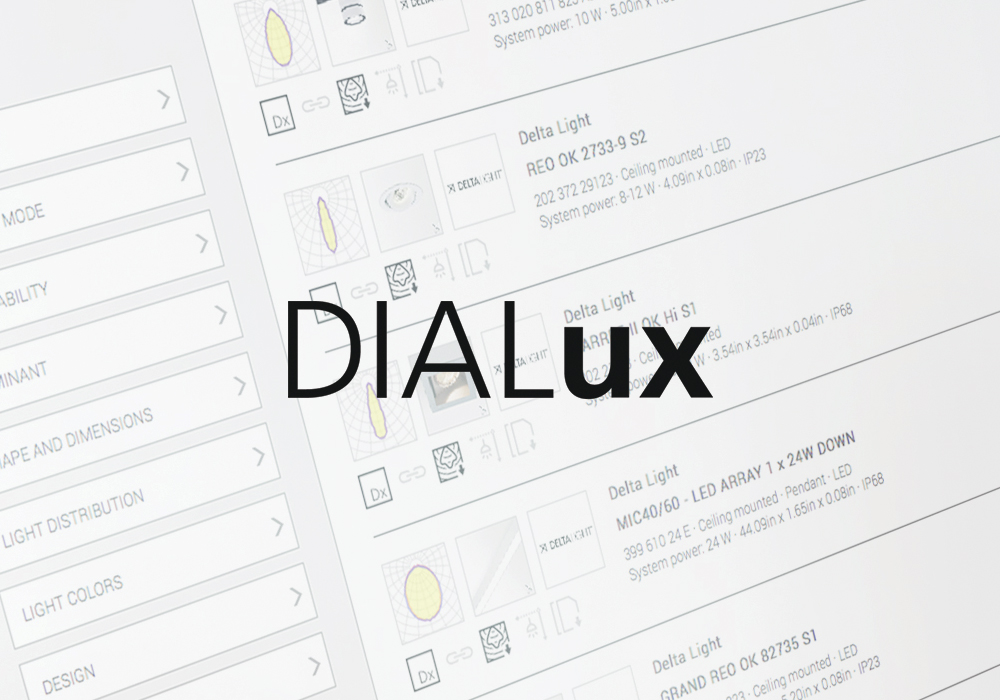

<div class="main">
    <div class="main-container">
       <div class="main-wrap_text">
           <h1>Расчет и проектирование освещения в Dialux Evo.</h1>
           <p>Вы освоите DIALux — инструмент для расчётов освещения,
                создания визуализаций и документации. 
                Получите сертификат DIAL GmbH, который подтвердит вашу квалификацию, 
                и сможете заниматься светодизайном на фрилансе.
            </p>
            <button>Приобрести курс</button>
       </div>
       <div class="main-wrap_logo"></div>
       <div class="main-wrap_advantages">
        <ul>
            <li><b>Смотрите в любое время.</b> </br> Все уроки в записи</li>
            <li><b>Бессрочный доступ в </b></br>  личный кабинет</li>
            <li><b>Домашние задания с </b></br>  проверкой и обратной связью</li>
            <li><b>Получится даже у тех, кто </b></br>  впервые открывает Dialux</li>
        </ul> 
          
         
    </div>
   </div>           
</div>   